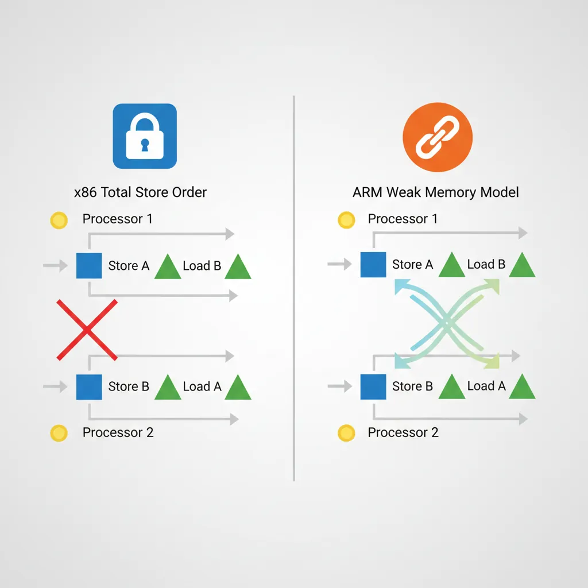
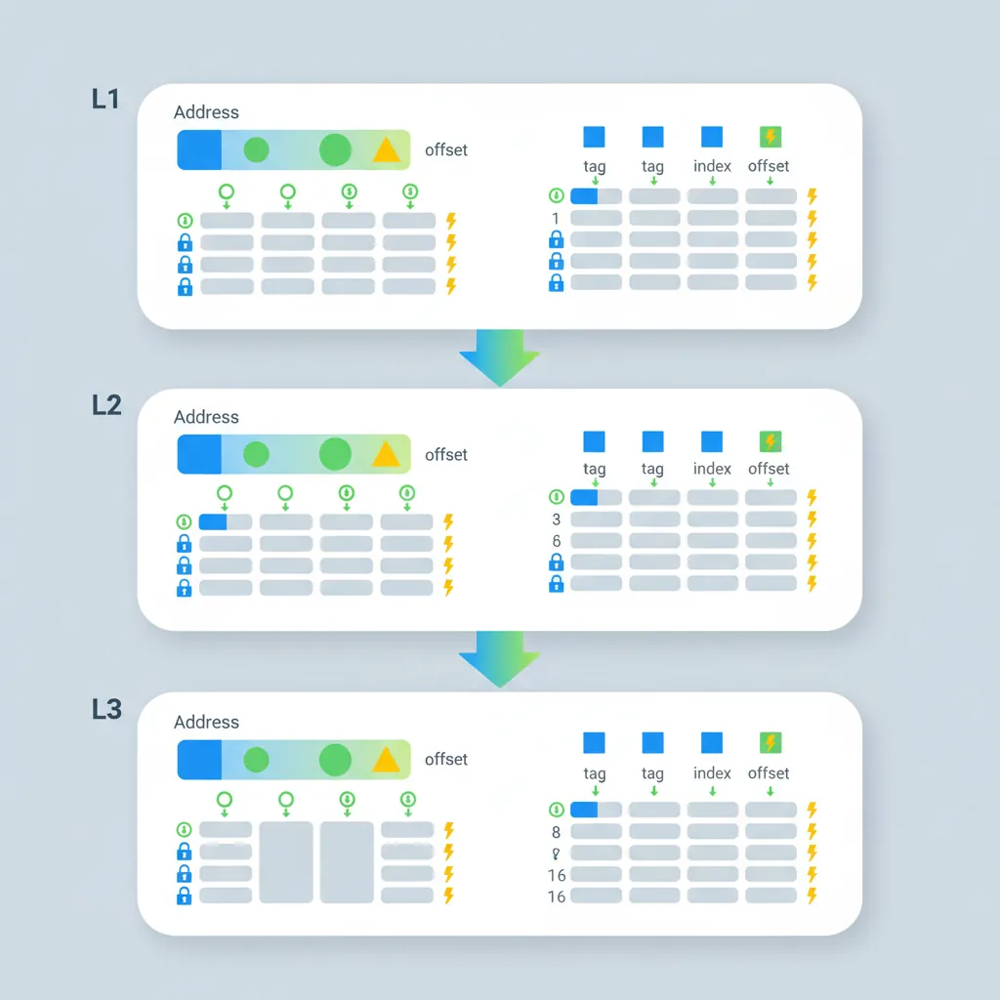
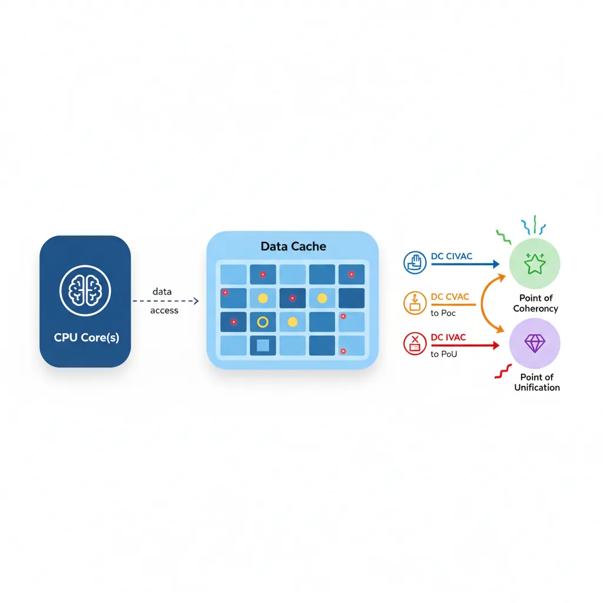
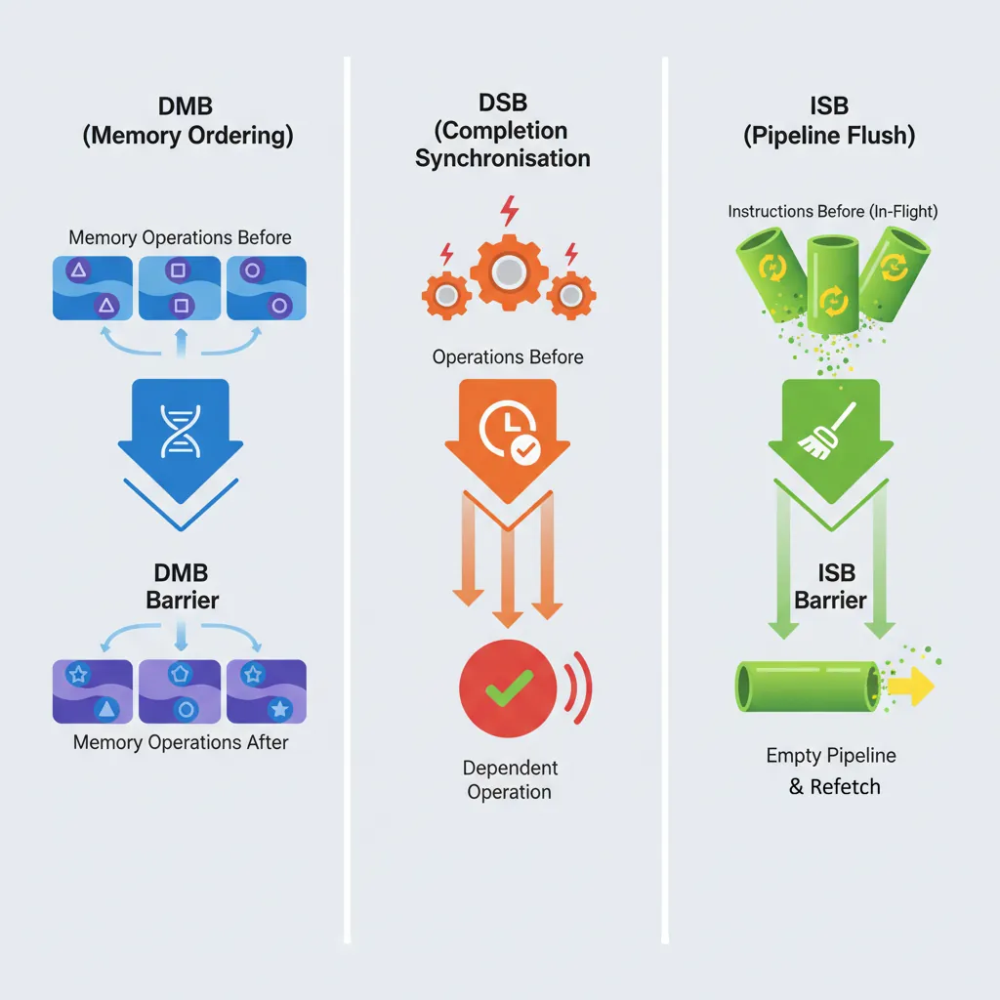
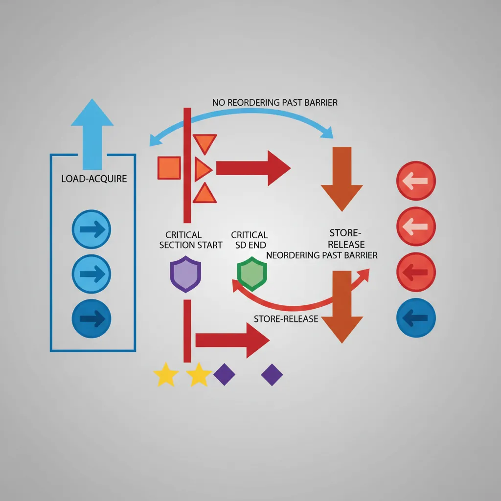

Introduction
ARM Assembly Mastery
Architecture History & Core Concepts
ARMv1→v9, RISC philosophy, profilesARM32 Instruction Set Fundamentals
ARM vs Thumb, registers, CPSR, barrel shifterAArch64 Registers, Addressing & Data Movement
X/W regs, addressing modes, load/store pairsArithmetic, Logic & Bit Manipulation
ADD/SUB, bitfield extract/insert, CLZBranching, Loops & Conditional Execution
Branch types, link register, jump tablesStack, Subroutines & AAPCS
Calling conventions, prologue/epilogueMemory Model, Caches & Barriers
Weak ordering, DMB/DSB/ISB, TLBNEON & Advanced SIMD
Vector ops, intrinsics, media processingSVE & SVE2 Scalable Vector Extensions
Predicate regs, gather/scatter, HPC/MLFloating-Point & VFP Instructions
IEEE-754, scalar FP, rounding modesException Levels, Interrupts & Vector Tables
EL0–EL3, GIC, fault debuggingMMU, Page Tables & Virtual Memory
Stage-1 translation, permissions, huge pagesTrustZone & ARM Security Extensions
Secure monitor, world switching, TF-ACortex-M Assembly & Bare-Metal Embedded
NVIC, SysTick, linker scripts, low-powerCortex-A System Programming & Boot
EL3→EL1 transitions, MMU setup, PSCIApple Silicon & macOS ABI
ARM64e PAC, Mach-O, dyld, perf countersInline Assembly, GCC/Clang & C Interop
Constraints, clobbers, compiler interactionPerformance Profiling & Micro-Optimization
Pipeline hazards, PMU, benchmarkingReverse Engineering & ARM Binary Analysis
ELF, disassembly, CFR, iOS/Android quirksBuilding a Bare-Metal OS Kernel
Bootloader, UART, scheduler, context switchARM Microarchitecture Deep Dive
OOO pipelines, reorder buffers, branch predictVirtualization Extensions
EL2 hypervisor, stage-2 translation, KVMDebugging & Tooling Ecosystem
GDB, OpenOCD/JTAG, ETM/ITM, QEMULinkers, Loaders & Binary Format Internals
ELF deep dive, relocations, PIC, crt0Cross-Compilation & Build Systems
GCC/Clang toolchains, CMake, firmware genARM in Real Systems
Android, FreeRTOS/Zephyr, U-Boot, TF-ASecurity Research & Exploitation
ASLR, PAC attacks, ROP/JOP, kernel exploitEmerging ARMv9 & Future Directions
MTE, SME, confidential compute, AI accelWhy Memory Ordering Matters
Modern CPUs reorder memory accesses for performance — stores may complete out of order, loads may be satisfied from store buffers before writing to cache, and the memory system may merge adjacent writes. Without explicit ordering constraints, shared-memory algorithms like spinlocks, message queues, and RCU break silently. The bug won't crash immediately — it will manifest as rare data corruption under load, on specific hardware, at 3 AM. ARM's weak ordering model is significantly more aggressive than x86's Total Store Order (TSO), meaning code that works on Intel may break on ARM without proper barriers.
ARM Memory Model
Weak vs Strong Ordering
x86 uses Total Store Order (TSO) — stores become globally visible in program order, and loads are never reordered before earlier loads. ARM uses a weaker model: loads and stores to Normal memory may be observed by other CPUs in any order unless device memory or barrier instructions are used. This means the hardware can reorder loads past stores, stores past stores, and loads past loads — all three are allowed. The ARM architecture manual guarantees only address dependency ordering (if load B depends on the address from load A, B won't execute before A).

| Reordering | x86 (TSO) | ARM (Weak) | Implication |
|---|---|---|---|
| Load → Load | Ordered | May reorder | Need DMB LD or LDAR |
| Load → Store | Ordered | May reorder | Need DMB or acquire/release |
| Store → Store | Ordered | May reorder | Need DMB ST or STLR |
| Store → Load | May reorder | May reorder | Both need barriers for this |
Memory Attribute Types
AArch64 defines memory types in the MAIR_EL1 register (Memory Attribute Indirection Register). Page table entries reference MAIR indices to select the attribute for each page:
- Normal — Cacheable, write-back or write-through, out-of-order access permitted. Used for RAM. The CPU may merge, reorder, and speculatively access Normal memory freely.
- Device — Non-cacheable, with ordering guarantees. Four sub-types control hardware behaviour:
Device-nGnRnE— No Gathering, No Reordering, No Early-write-Ack (strictest, for MMIO)Device-nGnRE— No Gathering, No Reordering, Early-write-Ack allowedDevice-nGRE— No Gathering, Reordering allowed, Early-write-Ack allowedDevice-GRE— Gathering, Reordering, and Early-write-Ack all allowed (loosest device type)
- Normal Non-Cacheable — Byte-addressable like Normal memory but bypasses caches. Used for DMA buffers and framebuffers where coherency would add overhead.
Shareability Domains
Shareability determines which agents must observe a data write — think of it as the "broadcast radius" for coherency:
- Non-Shareable (NSH) — Only the local CPU core sees updates. Suitable for thread-private data.
- Inner Shareable (ISH) — All CPUs in the inner domain (typically one cluster, or all big.LITTLE cores). This is the correct scope for most kernel and user-space synchronisation.
- Outer Shareable (OSH) — Inner domain plus outer agents (GPU, DMA controllers, interconnect-attached accelerators).
- Full System (SY) — All agents including ones outside the coherency domain. Required for system-level TLB and cache maintenance broadcasts.
Barrier instructions (DMB, DSB) accept a shareability option that determines their scope. Using ISH when SY is needed (or vice versa) is a common source of rare concurrency bugs.
Cache Hierarchy
Set/Way Organisation
A cache is organised like a post office with mailboxes: each address maps to a set (row), and each set has W ways (slots). Total capacity = S sets × W ways × L line bytes. Address bits are split into three fields:

- Offset (low bits) — byte position within the cache line (log2 L)
- Index (middle bits) — selects the set (log2 S)
- Tag (remaining high bits) — stored alongside data to identify which address is cached
| Level | Typical Size | Associativity | Line Size | Latency |
|---|---|---|---|---|
| L1-I / L1-D | 32–64 KB each | 4-way | 64 bytes | 1–4 cycles |
| L2 (per-core) | 256 KB – 1 MB | 8-way | 64 bytes | 8–15 cycles |
| L3 (shared) | 4–32 MB | 16-way+ | 64 bytes | 20–50 cycles |
On a cache miss, the hardware must evict an existing line (typically using LRU or pseudo-random replacement policy) to make room for the new data. Higher associativity reduces conflict misses but increases access latency and area.
VIPT vs PIPT Caches
Modern ARM L1 caches are Virtually Indexed, Physically Tagged (VIPT). The index bits come from the virtual address (available immediately, no TLB wait), while the tag comparison uses the physical address (from TLB lookup that happens in parallel). This hides TLB latency — by the time the set is read, the physical tag is ready for comparison.
VIPT can cause cache aliasing: if two virtual addresses map to the same physical page but produce different set indices, the same data exists in two cache lines. ARM sidesteps this by ensuring the L1 cache size divided by associativity does not exceed the page size (a 64 KB 4-way cache uses 14 index+offset bits ≤ 16 KB per way = 14 bits, matching a 16 KB page). L2 and L3 caches are always PIPT — they index and tag using physical addresses only, eliminating aliasing entirely at the cost of waiting for the TLB translation.
Cache Coherency (MESI)
ARM's interconnect (CCI, CCN, CMN, or DSU) maintains coherency using a MOESI-like protocol with five states per cache line:
- Modified (M) — Dirty and exclusive. This core has the only valid copy, and it's been written to.
- Owned (O) — Dirty but shared. This core supplies data to snoop requests; other cores hold stale Shared copies.
- Exclusive (E) — Clean and exclusive. Matches main memory; can transition to M without bus traffic.
- Shared (S) — Clean and shared. Multiple cores hold identical copies; must invalidate others before writing.
- Invalid (I) — Line is not present or has been invalidated.
Hardware coherency is automatic for Inner Shareable Normal memory — when Core 0 stores to address X, the interconnect invalidates or updates X in Core 1's cache. Software barriers are only needed for:
- Ordering guarantees (when which accesses become visible matters)
- I-cache/D-cache coherency (the I-cache is not hardware-coherent with the D-cache)
- DMA coherency (devices outside the coherency domain)
False Sharing: The Silent Performance Killer
When two cores write to different variables that happen to share the same 64-byte cache line, the coherency protocol bounces the line between M states on each core — a phenomenon called false sharing. In the Linux kernel, per-CPU counters were originally packed into arrays. Accessing counter[cpu] on different CPUs caused constant invalidation traffic. The fix was __cacheline_aligned_in_smp — padding each counter to a full cache line (64 bytes), eliminating cross-core coherency traffic and improving throughput by 10–50× on contended paths.
Probing Cache Info (CTR_EL0/CLIDR_EL1)
// Read Cache Type Register
MRS x0, CTR_EL0 // Cache Type Register EL0
// Bits [3:0] = IminLine (log2 of I-cache line in words)
// Bits [19:16] = DminLine (log2 of D-cache line in words)
// Bits [27:24] = CWG (cache writeback granule)
MRS x1, CLIDR_EL1 // Cache Level ID Register
// Bits [2:0] = L1 cache type (0=none,1=I,2=D,3=sep I+D,4=unified)Cache Maintenance
Data Cache Operations (DC)
ARM provides cache maintenance instructions that operate on individual cache lines by virtual address. These are essential for DMA, self-modifying code, and firmware:

| Instruction | Action | Scope | Use Case |
|---|---|---|---|
DC CIVAC | Clean + Invalidate | Point of Coherency (PoC) | DMA buffers (outbound + inbound) |
DC CVAC | Clean (writeback) | PoC | DMA outbound (device reads from RAM) |
DC CVAP | Clean to PoP | Point of Persistence (ARMv8.2) | Persistent memory / NVDIMMs |
DC IVAC | Invalidate only | PoC | Dangerous — discards dirty data. Use after DMA inbound only. |
DC CSW | Clean by Set/Way | All levels | Full cache flush at power-down |
DC CISW | Clean + Invalidate by S/W | All levels | Firmware boot / cache disable sequence |
// Flush a range of memory to PoC (for DMA)
// x0 = start address, x1 = size
flush_dcache_range:
MRS x2, CTR_EL0
UBFX x2, x2, #16, #4 // Extract DminLine
MOV x3, #4
LSL x3, x3, x2 // Cache line size in bytes
SUB x4, x3, #1 // Mask
BIC x5, x0, x4 // Align start down
1: DC CIVAC, x5 // Clean+Invalidate by VA to PoC
ADD x5, x5, x3
CMP x5, x1
B.LS 1b
DSB SY // Ensure all maintenance complete
RETInstruction Cache Operations (IC)
The I-cache is not coherent with the D-cache in ARM — writing to memory via stores (which go through the D-cache) does not automatically update the I-cache. Three maintenance instructions handle I-cache invalidation:
IC IALLU— Invalidate all I-cache lines to the Point of Unification (PoU). Requires EL1+ privilege. Affects only the executing CPU.IC IALLUIS— Same as IALLU but broadcasts to all CPUs in the Inner Shareable domain. Used after loading kernel modules or patching code that may execute on any core.IC IVAU— Invalidate I-cache by VA to PoU. Available at EL0 (user-space JIT compilers use this). Only invalidates a single cache line.
The Point of Unification (PoU) is the level where the I-cache and D-cache share a common view — typically the L2 cache. After cleaning D-cache lines to PoU (DC CVAU), invalidating I-cache to PoU (IC IVAU) ensures the instruction fetch path sees the new code.
I-Cache Coherency After JIT
// JIT code generation: write code, then execute it
// x0 = start of new code, x1 = end of new code
jit_flush:
// 1. Flush D-cache to PoU so the I-cache can see the writes
MRS x2, CTR_EL0
UBFX x3, x2, #16, #4
MOV x4, #4
LSL x4, x4, x3 // D-cache line size
BIC x5, x0, x4
.Ldc: DC CVAU, x5 // Clean D-cache line to PoU
ADD x5, x5, x4
CMP x5, x1
B.LS .Ldc
DSB ISH // Ensure D-cache maintenance complete
// 2. Invalidate I-cache to PoU
AND x6, x2, #15 // IminLine
MOV x7, #4
LSL x7, x7, x6 // I-cache line size
BIC x8, x0, x7
.Lic: IC IVAU, x8 // Invalidate I-cache line to PoU
ADD x8, x8, x7
CMP x8, x1
B.LS .Lic
DSB ISH // Ensure I-cache maintenance complete
ISB // Synchronise fetch pipeline
RETMemory Barrier Instructions
Quick Reference: DMB vs DSB vs ISB
DMB — orders memory accesses. Subsequent accesses won't reorder before prior ones. Does NOT stall the pipeline.
DSB — stronger: all prior memory accesses AND cache/TLB maintenance complete before anything after executes. Stalls until completion.
ISB — flushes the instruction pipeline and refetches. Required after changing system registers, installing page tables, or code modification.
DMB — Data Memory Barrier
DMB ensures all memory accesses (loads and/or stores) before the barrier are observed by the specified domain before any memory access after the barrier. Think of DMB as a one-way gate: earlier accesses must pass through before later ones are allowed.

Crucially, DMB does not stall the pipeline — the CPU can continue executing non-memory instructions (arithmetic, branches) while waiting for ordering to be established. It also does not wait for cache/TLB maintenance operations to complete (that requires DSB). DMB is the correct barrier for most synchronisation patterns:
- Message passing: Store data, DMB, store flag — ensures the consumer sees data before the flag
- Lock release: Store shared data, DMB, store lock=0 — ensures all critical section writes are visible before the lock appears free
- Device register sequences: Write config register, DMB, write enable register
// Producer: publish a message
STR x1, [x0] // Write data
DMB ISH // Ensure data write visible before flag write
STR x2, [x3] // Write flag = 1 (consumer side sees data first)DSB — Data Synchronisation Barrier
DSB is strictly stronger than DMB. In addition to ordering memory accesses, DSB stalls the pipeline until all prior memory accesses and all pending cache/TLB maintenance operations have completed to the specified domain. No instruction of any kind (not even non-memory instructions) executes after DSB until completion.
Use DSB when you need to guarantee completion, not just ordering:
- Before ISB: System register changes (MSR to SCTLR, TCR, TTBR) need DSB to ensure the write propagates before ISB flushes the pipeline
- After cache maintenance: DC/IC operations are not guaranteed complete until DSB
- After TLBI: TLB invalidation broadcasts are asynchronous; DSB waits for all invalidations to complete across all cores
- Before WFI/WFE: Ensures all stores are visible before the core enters low-power state
ISB — Instruction Synchronisation Barrier
ISB is fundamentally different from DMB and DSB — it operates on the instruction pipeline, not memory. ISB flushes all instructions that were fetched or decoded before the ISB and forces the CPU to re-fetch everything after it. This guarantees that any changes to system state (control registers, page tables, branch prediction) take effect for subsequent instructions.
ISB does not wait for memory accesses to complete — always pair with DSB first when modifying system registers via MSR:
MSR SCTLR_EL1, x0— Write the system registerDSB SY— Ensure the MSR write propagates to all observersISB— Flush pipeline so subsequent instructions use the new configuration
// Enable the MMU (EL1)
MRS x0, SCTLR_EL1
ORR x0, x0, #1 // Set M bit
MSR SCTLR_EL1, x0
DSB SY // Ensure write to SCTLR visible
ISB // Flush pipeline; now executing with MMU onBarrier Option Variants
Both DMB and DSB accept an option that encodes scope × direction. ISB always uses SY (full system). The option determines which agents and which access types are constrained:
| Option | Scope | Direction | Typical Use |
|---|---|---|---|
SY | Full System | All (LD+ST) | System-level TLBI, cache ops, device I/O |
ST | Full System | Store → Store | Order stores to different devices |
LD | Full System | Load → Load/Store | Order loads before dependent stores |
ISH | Inner Shareable | All | Most common: kernel/user sync between CPUs |
ISHST | Inner Shareable | Store → Store | Release stores in spinlocks |
ISHLD | Inner Shareable | Load → Load/Store | Acquire loads in spinlocks |
OSH | Outer Shareable | All | GPU/DMA coherency |
NSH | Non-Shareable | All | Thread-private ordering (rare) |
DMB ISH / DSB ISH for CPU-to-CPU synchronisation. Use DSB SY for system-level operations (TLBI, DC, IC, MSR). Using SY everywhere works but is slower — ISH only broadcasts within the CPU cluster.
Acquire/Release Semantics
LDAR / STLR Instructions
ARMv8.0 introduced load-acquire (LDAR) and store-release (STLR) instructions that embed barrier semantics directly into the load/store, eliminating the need for separate DMB instructions in most synchronisation patterns:
- LDAR (Load-Acquire) — No subsequent load or store can be reordered before this load. This is the "acquire" half of a lock — everything inside the critical section stays after the lock acquisition.
- STLR (Store-Release) — No prior load or store can be reordered after this store. This is the "release" half — all critical section writes complete before the unlock becomes visible.
These map directly to C11/C++ memory_order_acquire and memory_order_release. The exclusive variants (LDAXR/STLXR) combine exclusivity (for atomic read-modify-write) with acquire/release semantics. This gives you a complete spinlock without any explicit barrier instructions:

// Spinlock acquire using LDAXR/STXR + LDAR/STLR
spin_lock:
MOV w1, #1
.Ltry:
LDAXR w2, [x0] // Load-Acquire Exclusive
CBNZ w2, .Ltry // Spin if locked
STXR w3, w1, [x0] // Store Exclusive
CBNZ w3, .Ltry // Retry if store failed
RET
spin_unlock:
STLR wzr, [x0] // Store-Release zero (unlock)
RETLDAPR (ARMv8.3 Relaxed Acquire)
LDAPR (Load-AcquirePC) was added in ARMv8.3 as a weaker alternative to LDAR. While LDAR enforces full acquire ordering (no reordering of any subsequent access), LDAPR only prevents reordering of the load relative to subsequent stores to the same address. Specifically, LDAPR allows later loads to other addresses to be reordered before it — a relaxation that can improve performance in read-heavy workloads.
LDAPR maps to the C++ memory_order_consume concept (data-dependency ordering). In practice, the Linux kernel uses LDAPR for its smp_load_acquire() implementation on ARMv8.3+ systems, falling back to LDAR on older cores. The performance difference is measurable on workloads with frequent acquire loads followed by independent reads — LDAPR allows the CPU's load queue to service those reads out of order.
LDR (no ordering) < LDAPR (reorder stores only by address dependency) < LDAR (full acquire: nothing reorders before this load). Choose the weakest that satisfies your algorithm's correctness requirements.
LSE Atomic Operations (ARMv8.1)
The Large System Extensions (LSE), mandatory from ARMv8.1, add single-instruction atomic read-modify-write operations that replace LDXR/STXR retry loops:
| Instruction | Operation | C11 Equivalent |
|---|---|---|
LDADD / LDADDA / LDADDAL | Atomic load + add | atomic_fetch_add() |
LDCLR / LDCLRA / LDCLRAL | Atomic load + clear bits | atomic_fetch_and(~val) |
LDSET / LDSETA / LDSETAL | Atomic load + set bits | atomic_fetch_or() |
LDEOR | Atomic load + XOR | atomic_fetch_xor() |
SWP / SWPA / SWPAL | Atomic swap | atomic_exchange() |
CAS / CASA / CASAL | Compare and swap | atomic_compare_exchange() |
CASP | Compare and swap pair (128-bit) | __atomic_compare_exchange_16() |
The suffix A adds acquire semantics, L adds release, and AL adds both (sequential consistency). LSE atomics are significantly faster than LDXR/STXR loops on large systems because the hardware can implement them without exclusive monitors — the interconnect handles the atomic operation at the cache level, reducing coherency traffic.
MySQL on Graviton2: LSE Atomics Impact
When AWS released Graviton2 (ARMv8.2 with LSE), MySQL compiled with -march=armv8.1-a (enabling LSE) showed 30–40% higher throughput on contended workloads compared to the same binary compiled for ARMv8.0 (using LDXR/STXR loops). The improvement came primarily from LDADD replacing reference count increments and CAS replacing mutex acquisition loops. The Linux kernel added runtime LSE detection in 2019, patching atomic operations at boot time based on ID_AA64ISAR0_EL1.
TLB Maintenance
TLBI Operations
TLB invalidation instructions follow a naming convention: TLBI <type><level><shareability>. The IS suffix broadcasts the invalidation to all CPUs in the Inner Shareable domain — without it, only the local CPU's TLB is affected:
| Instruction | Scope | Use Case |
|---|---|---|
TLBI VMALLE1IS | All EL1 entries, broadcast | Full TLB flush after changing ASID or TCR |
TLBI VAE1IS, Xt | Single VA, all levels, broadcast | Unmapping a page (general) |
TLBI VALE1IS, Xt | Single VA, last-level only, broadcast | Permission change (PTE-only update) |
TLBI ASIDE1IS, Xt | All entries for an ASID, broadcast | Process exit / address space teardown |
TLBI VMALLE1 | All EL1 entries, local CPU only | Single-core boot or test scenarios |
Always follow TLBI with DSB ISH to ensure the invalidation completes on all cores before proceeding, then ISB if the current CPU's translations were affected. Missing the DSB creates a race where another core may still use a stale TLB entry.
Break-Before-Make Sequence
// Correct page table entry update (Break-Before-Make)
// x0 = PTE address, x1 = new PTE value
update_pte:
STR xzr, [x0] // 1. Write invalid entry (break)
DSB ISHST // Ensure invalid entry visible
TLBI VAE1IS, x0 // 2. Invalidate TLB for this VA
DSB ISH // Ensure TLB invalidation complete
STR x1, [x0] // 3. Write new valid entry (make)
DSB ISH // Ensure new entry visible
ISB // Use new mapping immediately
RETDevice & Non-Cacheable Memory
Memory-mapped I/O registers must be mapped as Device memory in the page tables — typically Device-nGnRnE (no Gathering, no Reordering, no Early-write-Acknowledgement), the strictest device type. This prevents the CPU from:
- Gathering: Merging two 32-bit writes into a single 64-bit write (which the peripheral wouldn't understand)
- Reordering: Issuing writes to different MMIO registers out of order (which could violate hardware init sequences)
- Early acknowledgement: Reporting a write as "complete" before it actually reaches the device bus (which could miss error status)
Accessing MMIO through Normal memory attributes causes undefined behaviour — the CPU may speculatively read device registers (triggering side effects), cache device responses (returning stale data), or merge writes. In Linux, ioremap() maps device memory as Device-nGnRnE by default. For DMA buffers that the CPU also reads/writes, Normal Non-Cacheable is appropriate — it prevents caching but still allows merging and reordering (acceptable for bulk data transfers).
UART Init: When Memory Type Matters
A common embedded bug: mapping a UART's control registers as Normal cacheable memory. The CPU caches the status register value, so polling UART_FR (flag register) for "transmit FIFO not full" returns a stale cached value — the loop either spins forever or overwrites data in the FIFO. Mapping as Device-nGnRnE forces every load to read from the actual hardware register, and every store to reach the FIFO in program order.
Conclusion & Next Steps
In this part we explored the foundations of ARM's memory system — from the weakly-ordered memory model that gives hardware maximum reordering freedom, through memory attribute types (Normal, Device, Non-Cacheable) and shareability domains that control coherency scope, to the set-associative cache hierarchy with VIPT L1 and PIPT L2/L3, maintained by the MOESI coherency protocol.
We covered the practical tools: DC operations for flushing data to main memory (essential for DMA), IC operations for I-cache coherency after JIT compilation, the three barrier instructions (DMB for ordering, DSB for completion, ISB for pipeline flush) with their option variants, acquire/release semantics (LDAR/STLR) that eliminate explicit barriers in lock primitives, LSE atomics that replace LDXR/STXR loops, TLB maintenance with the critical break-before-make sequence, and device memory mapping requirements for MMIO safety.
Practice Exercises
- Message-Passing Litmus Test: Write a two-thread message-passing pattern using only STLR/LDAR (no DMB). Core 0 stores data then flag; Core 1 polls flag then reads data. Verify that acquire/release ordering prevents the consumer from seeing stale data. Then replace LDAR with plain LDR and explain why it could fail on ARM.
- DMA Buffer Flush: Write a
prepare_dma_bufferfunction that (a) writes data to a buffer, (b) cleans the D-cache range to PoC using DC CVAC, (c) executes DSB to ensure completion, and (d) returns the physical address. Explain why DC CVAC (clean only) is sufficient for outbound DMA but DC CIVAC (clean + invalidate) is needed if the DMA controller will write results back. - Break-Before-Make: Modify the
update_pteexample to handle a large page (2 MB block entry) that spans 512 contiguous PTEs. Your solution must invalidate TLB entries for all 512 pages and handle the case where another CPU is concurrently walking the page tables. Explain why a single TLBI VAE1IS is insufficient.